Tabletop Battles Reviews: Codex Orks 11th Edition
The first Codex of 11th Edition has arrived, and It’s time to call a great Waaagh! Orks are this edition’s marquee antagonist, featuring in all the starter products, and continuing the tradition of 10th Edition, that has put them at the front of the Codex queue, leaving Space Marines in the dust. Getting the first Codex has historically been a bit of a mixed blessing, but there’s no evidence of that here - this book is extremely good, packed with powerful datasheets and detachments that will satisfy even the most exacting Warboss.
This is one of the heftiest books we’ve ever seen, so we’ve assigned a trio of reviewers to make sure it gets the attention it deserves. Mighty warboss Corrode adopted the Waaagh life in late 10th and hasn’t looked back since, so is taking the lead, and he’s been supported by Wings and Saffgor, who have helped out with the main review and some of the detachments (because making Liam write 15 of them seemed a bit much). This is easily the biggest review we’ve done since 9th Edition Space Marines, so read on if you want all the hottest takes on just how hard the galaxy is about to get krumped.
Thanks to Games Workshop for providing us with a review copy of this codex and a provisional version of the Munitorum Field Manual, plus samples of the new Ork models you may see in this review. Any rules or points costs we reference are subject to change until they are published on the Warhammer 40K App.Codex Overview
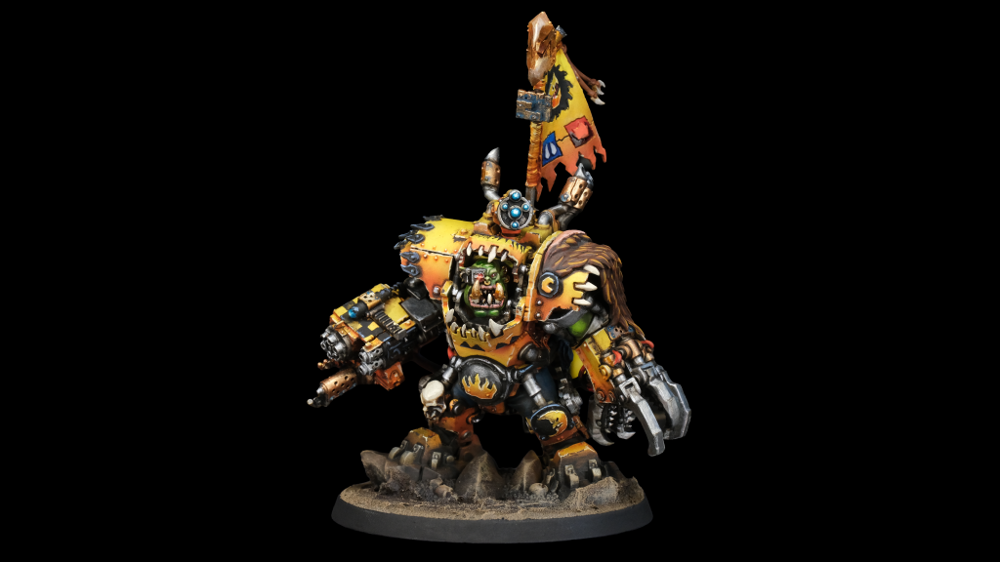
Nazdreg - Credit: keewaThe book itself is a dense product. With no Crusade content and about the same number of datasheets, it’s nevertheless 26 pages longer than the old one. Some of that is that a conscious effort to redress the often-cited belief that codexes in recent editions have been a bit lacklustre for non-gaming content, with slimmed down fluff pages and art. This one kicks off with tons of that stuff, including full-colour art spreads. You’re a hundred pages into this thing before you hit the model galleries. Whether you like what’s in here is a matter of taste, but we appreciate that there’s been real effort made to make this more of a complete product than just a clunky way to get hold of an app code.
Wings: For my money, the lore looks like a real return to form - it feels like it harkens back to the old days of games like Gorkamorka where the writers were given room to just run with things.On page 116 you then hit the rules section and the other thing you’ll then notice is that as Warhammer Community recently previewed there are fifteen detachments here. The reason there’s so many is pretty simple - apart from War Horde, the rest are all 1DP, so you need a lot of them to have interesting combinations to mix and match. Following that Morkasbord (or possibly Gorkasbord) of detachment rules, we then have new datasheets for every unit in the faction*, and these are not just minorly tweaked versions of what came before. Every unit has substantial changes to take into account, even those which came out in the Armageddon box a matter of weeks ago.
In order to keep this review to a manageable level, we will cover the army rules and datasheet changes here, and list out brief descriptions of the detachments which will link to separate detachment focus articles highlighting the key features of each one.
*Not you, Lootas and Burnas. These go off to the great Waaagh in the sky. Also, more surprisingly, the four buggies that aren’t the Rukkatrukk Squigbuggy are gone; we assume you’re meant to just fold them into the consolidated Warbuggy datasheet now.
The Video Version
If you'd like to watch and listen to a version of these words with your ears and eyes, Campbell's got you covered!
Standout Features
This book has a massive amount of material in it - it’s probably the most in-depth non-Marine Codex ever printed (so goodness knows what Space Marines are going to look like). This makes it hard to decide what stands out the most, but we’ve had a go - here’s what we love, and what we’re less keen on.
The Good
- Variety: Almost any conceivable Ork army you could want to run has some support in here, and essentially any Ork collection gets some love. Balance across the detachments also feels pretty good - there really aren’t any that don’t have some appeal.
- Da Krumpin’: Ork Infantry doesn’t depend on Waaagh to do damage on any turn - your melee elites are now brutally effective all of the time and you can apply the Waaagh bonus to them more often.
- Orky Flavour: Despite this book having a lot of detachments, all of them have a pretty solid identity, and feel broadly right for the aspect of the Waaagh they’re trying to present.
The Bad
- Too Complex There’s so much going on in this book, and every single datasheet seems to have stacks of rules, plus a bunch of abilities strapped to every single gun. Absorbing this has been tough for us, bona-fide professional thinkers-about-Warhammer, and we’re not sure how well it will land for the wider player base.
- No 2DP Detachments: Other than War Horde, all the detachments in this book are 1DP. This does enable lots of variety as mentioned above, but also contributes to it being quite overwhelming. 2DP detachments are great for providing a bit more of a direction to take your army in; without them it’s easy to get paralysed by choice. In addition, the 2DP + 1DP model has been really successful in creating a metagame with about the right amount of diversity, so the idea of losing that sucks.
- Datasheet Balance: …is all over the place. Mid-weight stuff and elite Infantry tend to feel about right for their new and improved profiles, but Monsters, heavier hulls, basic Boyz and some of the planes feel dramatically pushed, and there’s also a few weapon profiles in here that make us worry we’re forgetting some of the lessons of 9th Edition.
Army Rules
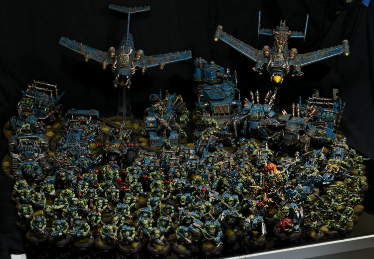
Orks. Credit: RockfishWaaagh!
The Ork classic returns for 11th Edition, reworked a little, but still pretty familiar to Ork players.
At baseline, Waaagh lets all Ork units re-roll Advance rolls, all the time. This is great, as the army has lots of Assault and lots of access to Advance/Charge, most commonly via the second part of Waaagh, which is the Riled Up state. Ork units that are Riled Up get a trio of benefits, two returning from 10th, and one new one:
- They have a 5+ Invulnerable Save.
- They can Advance/Charge.
- All their guns have Assault.
Riled Up units can get right in the opponent’s face, and soak up more of a counterpunch than the lightly-armoured Orks normally manage.
Finally, once per game in either Command Phase, you can call a War Cry, which makes all your Ork units Riled Up until the end of the following turn. Moving the actual impact of Waaagh into a status makes sense, as it makes it much easier to write rules that trigger that effect outside of your War Cry turn.
The ability to call a War Cry gives the Orks one big go turn where the whole army can launch itself into the fray, and shrug off the enemy’s counterattack, and the new version of Waaagh is more reliable on both of these fronts than it used to be - the Advance re-rolls maximise the chances of your Advance/Charging units hitting combat, while being able to activate it in your opponent’s Command Phase lets you call upon the durability if the foe is making the unwise decision to try and alpha strike you rather than the other way round. Adding Assault also makes this more widely relevant for a pure shooting army.
What returning players will have spotted is that what Waaagh does not provide any longer is a boost to damage output - no more +1S/A. We can reassure you that for most units, this will not be a problem - most melee specialists like Breaka Boyz and Meganobz have +1A all the time compared to their previous incarnations, while other units (like the new Boyz) have +1S compared to their 10th Edition profiles, and some other upsides like Lethal Hits on the charge. Characters, meanwhile, are just in a completely different ballpark for built-in lethality in this edition. There are a few units that get bitten a bit harder, most notably Beast Snagga Boyz and Squighogs, who both end up significantly less deadly into non-Monstrous foes, but in general you shouldn’t be too worried about suddenly not being able to kill stuff (Snaggas are also now cheaper than regular Boyz). Really, do not worry about that at all. The only real sadness is that you can’t leverage the +1A on all the Extra Attacks weapons in here.
This change also has an upside - it opens up design space for there to be a lot more ways to get extra Riled Up activations in the book, crucially tied to Datasheet rather than Stratagems, so essentially every list is going to have access to them a lot more of the time. Some units go so far as to just be Riled Up all the time, like the incredibly, awesomely, we’re-seriously-not-making-this-up improved Stompa. This means foes will always have to respect your threat ranges, and your best units will very often be sporting a 5+ invulnerable save.
This ability is extremely strong, and the sheer amount of extra access to it may frankly go a bit too far - Orks are not a one-turn army any more.
Unstable Energies
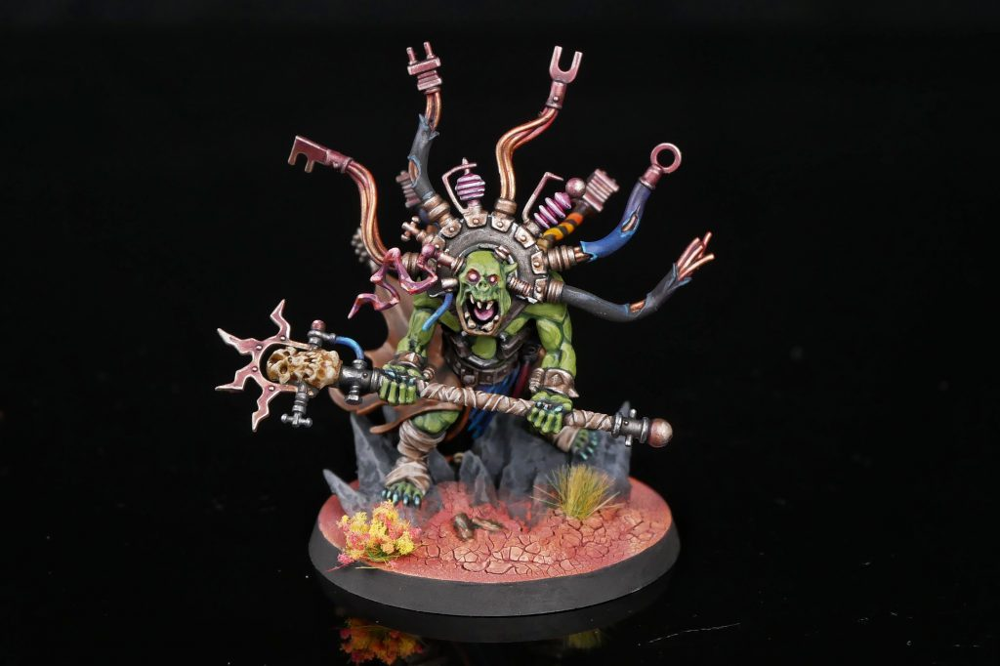
Ork Weirdboy by Craig "MasterSlowPoke" SniffenOur first big curveball surprise in this book - Psychic Levels are back. Like, honest to goodness Psychic levels. Every Grey Knights, Thousand Sons and Aeldari player just sat bolt upright and started rubbing their hands together with glee.
Every Psyker now has a psyker level of one or more, and access to a pool of powers that have a psychic level as well. Each Battle Round, a Psyker can activate powers with a total psychic level that does not exceed their psyker level, selecting from the pool they have access to.
Orks are not especially psychically gifted, and all the PSYKER datasheets in this book are L1, with two L1 powers on their sheets to use. However, the flexibility of 1DP detachments interacts with this nicely, and one of the Detachments in this book provides extra powers that any of your Psykers can use, plus an Enhancement that lets you push one of your Weirdboys to L2.
While it’s not technically part of this rule, this book also shows how psychic rolls are going to work in this edition (at least for Orks, and it lines up with the new Exodite Character, so we assume for everyone). When you go to activate a power, you roll a d6, and on a 1 the unit becomes Battle-shocked. The power still works if you roll the 1, but in order to activate any powers, you must not be Battle-shocked. This provides some foes with a way to shut down your psykers, and means that a L2 psyker who fails their first roll won’t get to activate further power (though the Enhancement for a L2 Weirdboy also provides re-rolls, so you’ll have to be pretty unlucky).
This is pretty exciting stuff for what it means for the rest of the edition, and hits a nice medium between the slightly dull one power per unit model of 10th and the excessive broadness of 9th and earlier disciplines. Top stuff.
Da Boss
Next up, you have an incentive to make a “proper” choice for your Warlord. If you select a model with the Da Boss ability as said Warlord (generally, anything that has the Warboss keyword, which is Warbosses, both flavours of Beastboss, Deffkillas, Ghaz and Nazdreg), you get one extra CP at the start of the Battle Round. This replaces this being an ability on specific characters, and we can absolutely guarantee you that you will want at least one of these in your army. Bonus CP for all Ork players. And now, a rant.
Wings: OK - I am assuming that something like this is going to come down the track for other armies because this is a better way of doing this than tying the effect to specific named Characters.If that is the case, I am begging GW to bring this forward for other armies, rather than giving us a 9th edition secondaries-style death march where armies with early Codexes get to be Just Better till others catch up. That was awful.
I appreciate that there’s some friction with armies that haven’t had an update yet, because this will still be there as an ability on some datasheets. I think they’ll probably cope with that oddity. There is zero cost to getting this in your army for Orks now, and if this is going to be the new model, I can take a pretty educated guess at what the relevant options will be for almost every faction. If I can, so can the studio, and it would be madness to hold out on this.
Also - as far as I can tell as worded, this keeps working if the model is destroyed? The one possible argument for this being balanced with what other armies get is that it does force you to pick a model that likely wants to be in the fray, but right now there’s not even that.
Special Move Types
The last army-level rules for Orks are the templates for two extra types of move, the Pulse Jet Move that’s one of Wazdakka’s options, and an Assault Disembark Move that turns up in a few places.
The Assault Disembark is pretty simple - it’s essentially Assault Ramp from Land Raiders. It lets you disembark after a Transport has made a Normal Move, and still shoot and charge later in the turn. Obviously a very good thing for Orks to have access to, but not complicated.
The Pulse Jet is complicated, letting the model move 18”+d6”, ignoring vertical distance, terrain and other models, and having to end unengaged. It stops the model doing an Action or Charging later in the turn, but does also give enemies targeting them -1 to hit with both ranged and melee attacks till your next turn. This has some upside if you need to put Wazdakka in a medium-risky position, particularly as it stacks nicely with cover.
Detachments
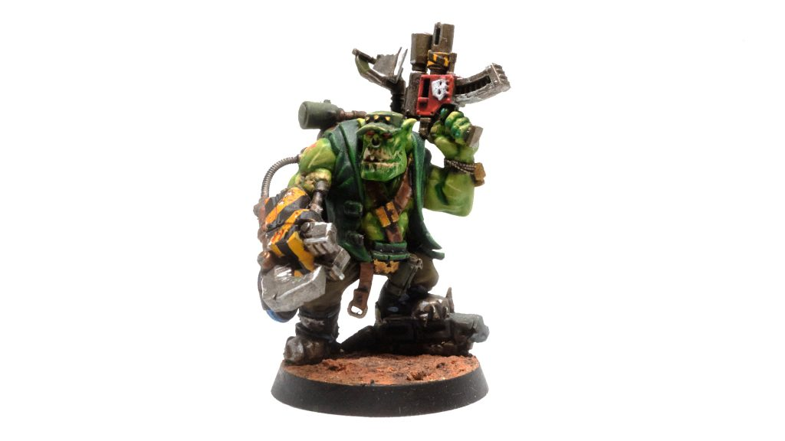
Credit: KeewaAs mentioned up top, Orks get 15 detachments to play with, 14 of which are 1DP, giving you very broad options to shape your list.
A full third of these detachments have the Purge the Foe disposition (plus another half for War Horde and its dual pick with Take and Hold, the second-most common disposition), so there’s a clear expectation here that Ork players are going to want to focus on krumpin’ to the exclusion of all else. Given they’re all 1DP though, it’s not massively difficult to run whatever disposition you want.
War Horde - Purge the Foe/Take and Hold
Detachment Focus: War HordeThe only 3DP detachment here, War Horde is an all-rounder detachment intended to let you jump into Orks and play something that basically just works if you have a shallow collection of units which don’t fit any particular theme. Interestingly, it allows you to pick from either of Purge the Foe or Take and Hold as a disposition so that you aren’t totally restricted to one type of game.
Green Tide - Take and Hold
Detachment Focus: Green TideThe classic “I want to run lots of Boyz” detachment returns. If you’re traumatised by watching waves of Boyz fly at you in early 11th edition, don’t be - this is very much changed from its previous incarnation. This time around, it amplifies the offensive capabilities of the humble Boy, and provides some wider enhancements for other Infantry on top of that, particularly Beast Snaggas.
Bully Boyz - Purge the Foe
Detachment Focus: Bully BoyzAnother returning favourite, this one is all about your Nobz and Meganobz showing off exactly why they’re the biggest and baddest Orks in the horde, helping them hit harder, and suck up more punishment in return.
Runt Swarm - Priority Assets
Detachment Focus: Runt SwarmAnd here is its total opposite, with a detachment focused on the smallest and weediest runts in the army, making your Gretchin extra sneaky and tricksy.
Shoota Boyz - Purge the Foe
Detachment Focus: Shoota BoyzDoes what it says on the tin, buffing your shooty infantry units. This one feels like half of More Dakka (the faction pack version) mixed with some new ideas, and works well with the generally more dangerous Ork shooting this book enables.
Taktikal Brigade - Take and Hold
Detachment Focus: Taktikal BrigadeA detachment for your suspiciously organised Blood Axes. Probably the least-changed thing here, with rules that will mostly be familiar to anyone who’s played against it recently, but with a couple of new tricks up its sleeve.
Wreckas - Priority Assets
Detachment Focus: WreckasA detachment that’s all about your Wrecka Krews and Freebooterz - that is to say Breaka Boyz, Tankbustas, and Flash Gitz. This one got the other half of More Dakka, and if you want to obliterate foes with high-damage Infantry, this is the one for you.
Da Big Hunt - Purge the Foe
Detachment Focus: Da Big HuntStaying on theme from its previous incarnation, this one is all about your Beast Snagga units - buffing them up to fight the biggest game they can find, and to deploy their huntin’ know-wots to encircle the foe.
Madcap Meks - Disruption
Detachment Focus: Madcap MeksThis one’s all about your Mekaniaks, particularly the ones toting shokk attack gunz, with a truly Orky set of rules that add some potentially powerful chaotic madness to your games.
Dread Mob - Purge the Foe
Detachment Focus: Dread MobIf you want to grind your enemies to dust under the feet of clanking war machines, the Dread Mob returns, ready to do exactly that. It adds loads of powerful buffs for Deff Dreads and Kanz, and a few tricks for even larger war machines.
Blitz Brigade - Take and Hold
Detachment Focus: Blitz BrigadeYour Rigs and Battlewagons get a detachment focused on them, helping your Boyz to ride around in style and reach the fight at record speed.
Kult of Speed - Reconnaissance
Detachment Focus: Kult of SpeedThe Kult of Speed roars along into 11th edition, with bikes, Deffkoptas, and anything riding in a Trukk dakka-ing in all directions.
Flyboyz - Reconnaissance
Detachment Focus: FlyboyzEven the planes get in on the action, with a detachment of their own (and a few bits for Deffkoptas too), which provides exceptionally powerful capabilities for the massively improved Wazbom Blastajet.
Brute Bosses - Purge the Foe
Detachment Focus: Brute BossesYour Warbosses become even meaner and greener in this detachment, which lets them fight on death and otherwise consists entirely of enhancements. If you want to go big on orky herohammer, this is for you.
Wurrband - Disruption
Detachment Focus: WurrbandA psyker-focused detachment, which adds some of the new psychic abilities to your Weirdboys and Kill Rigs.
Datasheets
 Painboy and Orderly - Credit: keewa
Painboy and Orderly - Credit: keewa
This is going to take a while, because essentially every single Datasheet has been revamped for 11th Edition. We’ve grouped these as logically as we can, don’t @ us if you don’t like the categories selected.
One quick note before diving in - in the preamble at the start of the codex, a small general change for 11th Edition is highlighted, which is that a unit’s name always acts as an additional Keyword for the unit, rather than it being reprinted in the keywords section every time. Not really a functional change, but potentially confusing if you don’t read the small print!
The other important note is that this Codex introduces weapons with Hunter profiles. The rules for these are already buried in the App, but basically they provide an alternative profile you can only select when targeting units with specific keywords. Unsurprisingly, it mostly shows up here on Beast Snagga units of various flavours.
Before we get started, there’s a couple of quick notes. Firstly, Lootas and Burnas are gone - not really a surprise, as the kit was a) ancient and b) non-functional without the old Boyz kit (the Mek model lacks an arm for his big shoota or rokkit launcha, which you were meant to borrow from Boyz, but obviously can’t any more). Second, and slightly weirder, all the 2018-era buggies except the Rukkatrukk Squigbuggy have now been consolidated into a single “Warbuggies” datasheet meant to represent all of them. The Battlewagon is now two separate datasheets, one still called Battlewagon and the other a revived Gunwagon. The separate Wurrboy datasheet has evaporated, which is unfortunate now that there’s a psyker-focused detachment he might have found a place in.
Also, basically everything that you could describe as a slugga or shoota now has the same LETHAL HITS: non-MONSTER/VEHICLE rule that we saw previewed for Boyz (we’re saying this now to not have to type out that particularly lengthy rule every time it comes up), and all Nobz (including the squad of them) go up to 3 wounds.
Characters
Epic Heroes
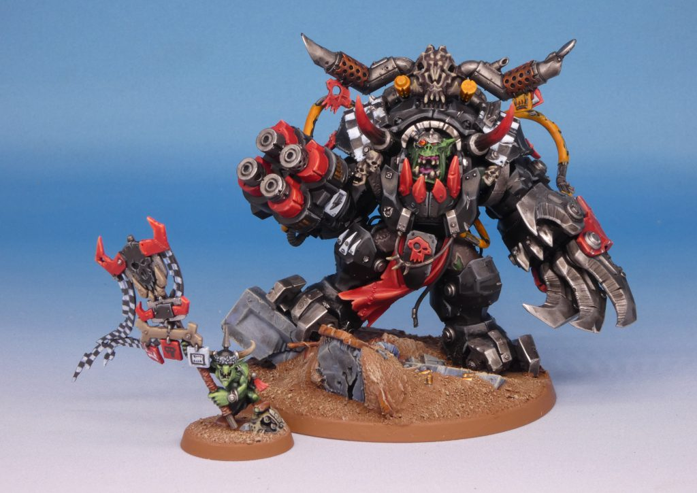
Ghazghkull Thraka and Makari. Credit: 40khamslam.Ghazghkull Thraka has flip-flopped back to being a solo piece, instead of a Leader. He’s not totally vulnerable, though - Da Grand Warlord’s Ladz means that he’s a Lone Operative if he’s within 3” of another ORKS INFANTRY unit. Even if someone does manage to take a shot at him, he’s now T10 with 16 Wounds - though thankfully no access to a 2+ InSv, as Makari is now represented by Makari, Hoist Dat Banner!, a once per game ability which allows you to rile up any number of units up to the current battle round number until your next turn. He also still hands out the excellent +1 to hit and +1 to wound in melee buff, which is now a 6” aura.
Mork’s Roar has either an aimed mode which pumps out a ton of shots at S6 AP-1, or a point blank mode which trades off some shot count to be TORRENT and CLOSE-QUARTERS. You’re not running the Prophet of da Waaagh for his guns, though. In melee, Gork’s Klaw now has 7 attacks at S14 AP-3 D4, which is nice. It also has DEVASTATING WOUNDS and CLEAVE 2, which is even nicer. This is an interesting first test for what seems to be a generalised change in approach in 11th edition - weapons which used to have sweep profiles now have CLEAVE. In theory this makes a lot of sense - it’s much cleaner than arbitrarily picking a profile, and means you’re always swinging with your high-powered attacks rather than picking the weaker one because it’s more efficient. However, the obvious point is that getting +2 attacks per 5 models with a very powerful weapon is a lot better than the old sweep profile, so Ghaz is going to hit like a Trukk even more than he did before. Just in case the klaw isn’t enough to get the job done, he also has an Adamantine ‘Eadbutt, a single EXTRA ATTACKS weapon which has both DEVASTATING WOUNDS and PRECISION and does D3+3 damage - meaning it’s always at least as good as the klaw, and potentially pops 6 damage through a character, which kills an awful lot of what’s out there on its own.
Ghaz is terrifying, but is at least not cheap, coming in at 300pts. He’s so easy to protect that that still seems extremely good - he’s easily more impactful than a C’tan at this point, and as Infantry with access to Lone Operative, he can usually get into a fight pretty much unscathed.
Nazdreg makes a welcome return from his last appearance in 3rd edition, with a truly stonking new model to boot. He’s not quite as big and beefy as Ghazghkull, being merely T7 with 8 Wounds, but he’s still pretty chunky. His Kustom Blasta X has three fire modes and unlike every other kombi-weapon, you can fire all of them at once - he has a skorcha and a shoota with pretty standard profiles, and then the gatler which pumps out 6 shots at S9 AP-2 damage 3. It is HAZARDOUS, but that’s not such a big deal any more. He also gets to use it in melee, where it’s an EXTRA ATTACKS weapon with CLEAVE 1 with a respectable 6 attacks at S5 AP-1 D1. The real threat is from Moonchewa, however, which is also CLEAVE 1 as well as TWIN-LINKED, and throws out 5 attacks at S12 AP-2 D3.On top of that, he comes with three datasheet rules. Nazdreg’s Know-wotz gives his unit Deep Strike and their ranged attacks IGNORES COVER, meaning his Meganobz can keep up with him and his built-in Deep Strike, while Supreme Kunnin’ lets his unit make a reactive move in the enemy Movement phase of D6”, or up to 5” if the unit is riled up.
His other rule is Intimidating Motivation - and note that this is once per battle round, per army, so you can’t trigger it multiple times with multiple Warbosses. In your Movement phase, at the start or end of this unit’s move, you can pick a friendly ORKS unit within 6”. That unit is no longer battle-shocked, and is also riled up until the start of your next turn. This is a massive buff to be able to hand out, and notably also is unit to unit - so if you’ve got him attached to a big brick of Meganobz, you can trigger this from anywhere across that footprint, meaning its range is a lot bigger than you might think. Removing battle-shock and giving out riled-up is absolutely huge. He can only join Meganobz, but that’s no bad thing given they make him tougher to kill too. Nazdreg is back, and he means business.
If you remember playing against Orks and seeing Zodgrod Wortsnagga come tearing across the table at you surrounded by his super runts, good news - he no longer has the Scout move, or move buff, that he did previously. Instead his unit is always riled up, and gets +1 A, WS, and S for their melee weapons. His datasheet is still fine, and you may see him show up just to add some punch to your otherwise pretty feeble Gretchin, but he’s a LOT tamer now than he was before. He is, however, also way cheaper, coming in at only 50pts, making him with a big squad still a pretty appealing choice.
Wazdakka Gutsmek arrived late in 10th edition with a fantastic datasheet. His 11th edition version retains most of the magic, but is slightly toned down in some ways. For one thing, Fixit no longer fixes anything. Full Throttle still gives you a choice of 3 rules, two of which are pretty much the same as they were previously. The third, Pulse Jet, gives you the special pulse jet move described earlier - this isn’t as good as the old version, since it explicitly prevents you from charging or doing actions, but if you need him to get somewhere FAST for scoring or to unleash his psyko-gatler (which keeps all its previous rules, and also gains the conditional LETHAL HITS like shootas and sluggas), it’s still handy. The grabba dragga’s melee profile gets a welcome buff, adding CLEAVE 2, while the speeding bulk loses a few attacks but gets CLEAVE 1 as well, so if you can get him into a big squad of something he’s going to be throwing out a sickening number of attacks. The law has finally caught up with him a little points-wise though, and he now weighs in at 200.Mozrog Skragbad is no longer a Leader (a change which is duplicated with the generic Beastboss on Squigosaur below). Instead he’s a solo piece with the Beast Snagga Following rule, which means he’s a Lone Operative while he’s within 3” of a friendly BEAST SNAGGA unit (except MONSTER CHARACTER units, so you can’t use another Beastboss and get them to hide each other). In addition, he has One Last Kill which gives him a 2+ fight on death, and Da Bigger Dey Iz… which lets him re-roll wound rolls in melee against MONSTER and VEHICLE units. The attacks he’s re-rolling are pretty meaty, too; Big Chompa’s Jaws lose their DEVASTATING WOUNDS but get ANTI-MONSTER/VEHICLE 3+, and are damage 4, while the Gutrippa has as standard and a hunter mode. The standard one has CLEAVE 1, with 6 swings at 2+ S9 AP-2 D2. That’s pretty good, but the Hunter version has LETHAL HITS instead, and hits at S12 with D6+1 damage. Any big target Mozrog can get his hands on ought to be turned into a trophy in short order. He’s also still aggressively priced at 170pts, especially as he keeps his Feel No Pain.
Boss Snikrot was an incredible scoring piece in 10th edition, with a once per game uppy-downy which triggered during your Movement phase - excellent for scoring basically any secondary, especially if you got the chance to stack up something like Behind Enemy Lines and Establish Locus. He loses one bit of this utility now, as he’s no longer able to show up anywhere on the table. However, he trades that off with a new Kunnin’ Infiltrator rule, which means that at the end of your opponent’s Fight phase if each model in this unit is hidden and unengaged, you can put them into strategic reserves. Deff from the Shadows, meanwhile, lets you make an ingress move at the end of your opponent’s Movement phase, and works from the first battle round onwards. He’s still able to run solo as a Lone Operative, or you can bring some Kommando friends along too and bounce them around the table. It’ll be a little bit harder to get him in the right position, but you get more bites at it too, which is a fair trade in our view.Warbosses
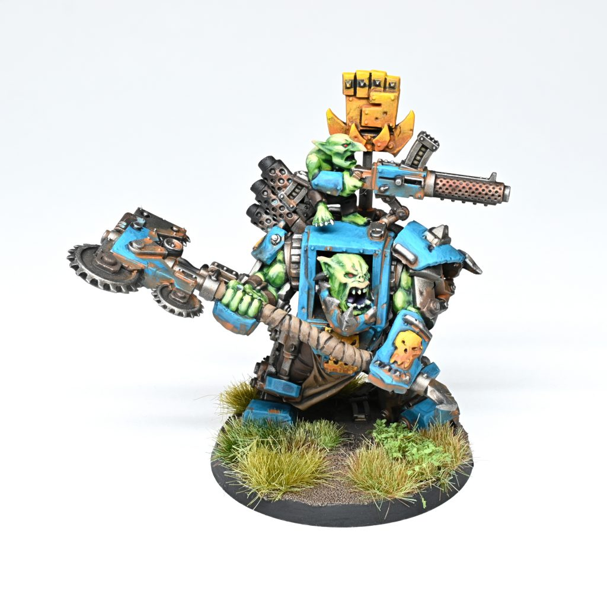
Warboss in Mega Armour. Credit: RockfishThe 10th edition Warboss was a funny creature, with some respectable output in the Waaagh but a pretty anaemic profile the rest of the time. The new datasheet goes a significant way towards changing that up. One welcome bump is to his Toughness, which is now 6 - which is what non-Ork players always assumed it was anyway. His power klaw now goes up a more respectable 6 attacks from its previous 4, and becomes WS2+ and Strength 12 into the bargain - meanwhile the kustom choppa has the same number of attacks at S7 AP-2 D2, but with CLEAVE 2 as well, which is pretty good. In his other hand you can take a kustom shoota, a kombi-skorcha, or a kombi-rokkit. His Might Is Right datasheet rule now gives him +3 A and +2 S in a turn where his unit made a charge move, which is wild - I will happily take a 9 attack power klaw at S14, thanks. He also has the Intimidating Motivation rule also seen on Nazdreg, which is a great buff you’ll want access to somewhere.
If that wasn’t enough, he also brings a Boss’ Ammo Runt, which gives his unit +1 to hit rolls once per game in the Shooting phase. This is a great buff to be able to hand out, and importantly has a different name to the equivalents in Boyz and Nobz, allowing you to get the effect twice per game in an attached unit.
The Warboss in mega-armour has a tough act to follow after that, though he tries gamely. He also gets a Toughness boost up to 7, and his ‘uge choppa gains CLEAVE 2 and an extra attack, plus flat damage 3. Not bad. He has the same Intimidating Motivation rule, and also Krushin’ Impetus, which means that when his unit ends a charge move you can pick an enemy unit you’re engaged with and roll a d6 for each of your models which is engaged with that unit to do a mortal wound on a 3+. If you roll this guy and 6 Meganobz into something that ought to get you around 4 mortals, which isn’t bad.
The Deffkilla Wartrike gets a similar ability to the Warbosses on foot called Get Back in da Race!, which only targets SPEED FREEKS units. Notably you can use this as well as Intimidating Motivation, so that’s one way to get around the once per battle round restriction. His Fuel-Mixa Grot just gives +1 to advance rolls now, rather than the flat 6”, which is less good.
His weapons have gotten a complete switch around, with the killa jet now turning into an EXTRA ATTACKS melee weapon with either a burna or cutta mode, and the snagga klaw getting a shooting profile similar to Wazdakka’s. The klaw’s melee profile goes down to S7, but gains an attack, goes to WS2+, and gets CLEAVE 2.
The Beastboss also gets an alternative version of Intimidating Motivation. This time it’s called Keep Huntin’ and only targets BEAST SNAGGA units. He also retains his +1 to hit rolls rule, now called Dodge Dis! which interestingly impacts both melee and ranged attacks. The Beast Snagga Klaw and Beastchoppa are now a single weapon profile which gets SUSTAINED HITS 2 against MONSTER and VEHICLE units, and has 6 attacks at S12 AP-2 D2. He loses his DEVASTATING WOUNDS on the charge, but that should be compensated for by everything else.
The Beastboss on Squigosaur has the same Keep Huntin’ rule and goes up to T9 W10. Like Mozrog, he’s not a leader any more, but gets an equivalent rule to be a Lone Operative while he’s within 3” of a BEAST SNAGGA unit. He also has a Thundering Stampede aura to give BEAST SNAGGA units within 6” +1 to charge rolls. In melee, his beastchoppa gets a standard profile similar to the 10th edition one, with AP-2 and CLEAVE 1 instead of the ANTI-MONSTER/VEHICLE it had before, and a Hunter profile which bumps it to S12 and D6 damage. The squigosaur’s jaws no longer have DEVASTATING WOUNDS, but hit on a 3 now and get ANTI-MONSTER/VEHICLE 3+, so still add some handy extra output. He’s also a MONSTER now instead of MOUNTED, which among other things means he can use Crushing Impact.
Meks
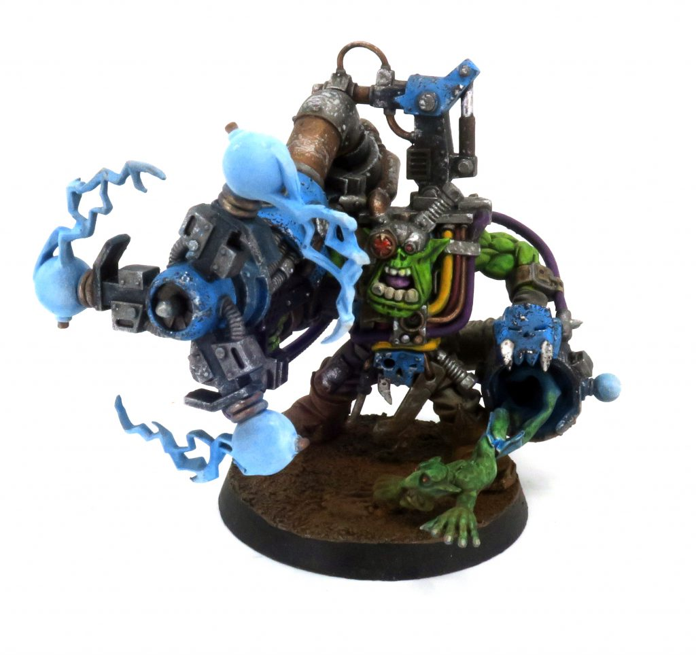
Ork Deathskulls Big Mek with Shokk Attack GunOne immediate note before we dive in here - everything with “Big Mek” in its name now has the BIG MEK keyword, which the mega-armour and shokk attack gun guys were missing last edition since they had their full unit names instead. This is helpful for a number of enhancements and the like which require BIG MEK.
The Big Mek’s statline is unchanged, but everything else here is new. First up is the More Dakka ability, common to all three of the on-foot Big Meks, which gives the unit’s ranged attacks IGNORES COVER and, if the unit is riled up, SUSTAINED HITS 1 as well. He also keeps his Shokk-boosta, which now this makes you auto-advance 6”, as well as allowing you to move through all types of model. However, at the end of that advance move, you have to make a hazard roll for each model in the unit, so there is some risk. The auto-advance is huge though, and well worth the slight risk of losing a few wounds in most scenarios.
His shooting gets a bump too. The kustom mega-blasta switches from damage D6 to damage 3, which is a sidegrade, but the traktor blasta is now 3 shots instead of 1 and while it loses the DEVASTATING WOUNDS and drops to Strength 6, it retains ANTI-FLY 2+ and goes to D3+3 damage. Importantly, both are now BS4+, which makes him much more reliable for actually hitting his target - especially with IGNORES COVER. On the melee side, both the drilla and power klaw get an extra attack, and the power klaw gets a bump to S10 too. Interestingly he can now attach to Flash Gitz, which he couldn’t before.
The Big Mek in mega-armour gets a similar bump to BS4+, but his guns are only ok. The tellyport blasta has a great statline, but short range, and trades off with the kustom force field - that said, you may not need the KFF with the new datasheet ability for Meganobz, for which see more below Meanwhile his melee is straight up inferior to the non-mega version for some reason. Once per game, he can also make your unit heal 3 wounds with the Grot Oiler. As well as Meganobz, he can now attach to Mek Gunz, which is a pretty interesting possibility for giving them the invulnerable against Shooting and also IGNORES COVER and possibly SUSTAINED HITS 1.
The Big Mek with shokk attack gun gets an enormous buff. The SAG is now D3+3 shots instead of D6+1, jumps to S12, and gets D6+1 damage. It is only BS5+ still, but ignores cover, which will help. He also has the Support Shokka rule - if he’s within 3” of an ORKS INFANTRY unit (except another Big Mek with a shokk attack gun), he gets Lone Operative. Even if you don’t have space to fit these guys in as leaders, you can potentially scatter them about as Lone Ops, and their gun is probably good enough for that to be worth a try. On the other hand, he loses an attachment (no longer being able to join Breaka Boyz), and can’t join Flash Gitz like his non-SAG brother.
Big Mek Dakkarigs came in pretty hot from the Armageddon box, and for some reason they’ve been buffed here. The blitzkannon now hits on BS4+ and has IGNORES COVER, and gains LETHAL HITS against non-MONSTER/VEHICLE. It loses SUSTAINED HITS 1, but the Dakkarig gains Even More Dakka as a datasheet rule, so you get it back for all of its guns if the unit is riled up. The Dakkablitz rule is renamed Blitz Dem Gitz! but does exactly the same thing as it did before. The rokkit launcha has also been renamed to multi-busta launcha, and while it loses HEAVY it gets IGNORES COVER and SUSTAINED HITS, which is fair enough. These were great already, and look even better now. They’re also now characters, which is bad for Assassination, but good for being able to plonk Enhancements on them.Meks have a newly minted model for this release, and get a new datasheet to go with it. The kustom mega-slugga loses BLAST, but gains CLOSE-QUARTERS, BS4+, and a flat 3 shots and 3 damage instead of d3/d6 respectively. His Kustom Dakka rule gives his unit IGNORES COVER, while Clever Know-wotz is the same repair ability as previously - though now he can do it at the start or end of this unit’s move instead of the end of the Movement phase, so you have a little more flexibility than before. He can’t now repair TITANIC or AIRCRAFT models, however. One important note here is that these are now Support, so you can’t run them solo - you’re gonna need a unit for them to attach to. That’s easier to do than it was, though, as they are also now able to join Flash Gitz, and you might actually want to ever attach one of these to, well, anything, since they hand out IGNORES COVER at a steep discount from the Big Mek (though they don’t have access to the SUSTAINED HITS 1 part, and many Enhancements you might want to take require a Big Mek and not this guy). They gain EXPLOSIVES, too, which is nice.
Support
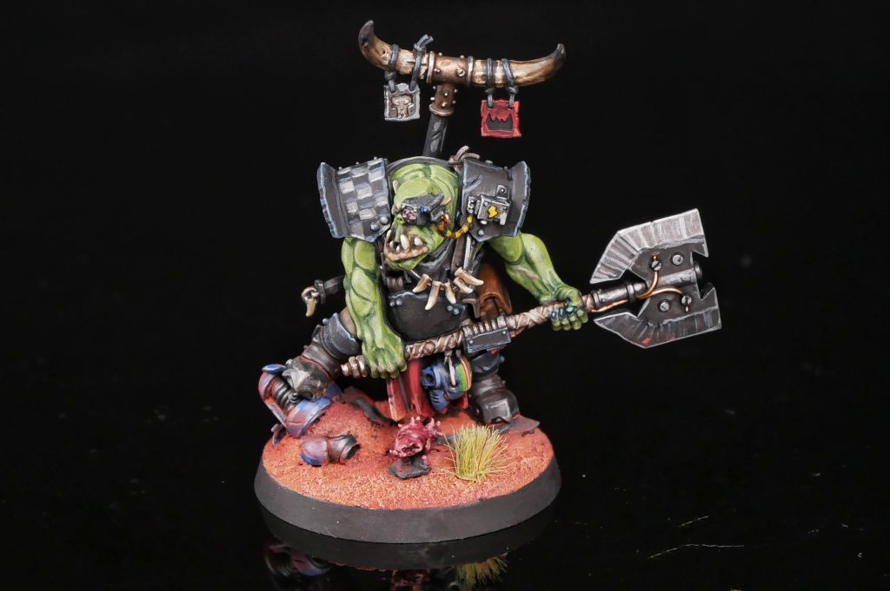
Goff Bigboss by Craig "MasterSlowPoke" SniffenThe Weirdboy is a Support now, rather than a Leader, which is a great move. He also gets to join Beast Snagga Boyz as well as the regular flavour. His shooting attack is now the wonderfully-named Power Vomit, which gives 3 shots at 12” range with S5, AP-3, D2, with all of TORRENT, BLAST 1, HAZARDOUS, and PSYCHIC stacked on top (though of course PSYCHIC is pure downside for him since he doesn’t roll to hit anyway). In melee, his staff is much the same as previously, but now a flat 2 damage rather than d3.
You don’t care about any of that though, you want to know about psychic levels as foreshadowed under Unstable Energies above. By default a Weirdboy is only psyker level 1, though there’s an Enhancement in Wurrband to bump that up to 2. His powers are either Da Jump or Warpath. Da Jump is much the same as it was previously, putting your unit into strategic reserves in the Movement phase and giving them Deep Strike - though note that this is more flexible than it was, because you don’t have to immediately bring them back in, so you have the option of holding the unit for use later on. Warpath is used in the Fight phase, when the unit is selected to fight. The unit’s melee attacks get re-roll 1s to wound, and also become PSYCHIC, which is potentially huge if you’re swinging at something with hit modifiers.
The Bannernob and Bigboss buck the trend of this codex in that they eat substantial nerfs from their Armageddon box datasheets. The Bannernob drops to OC3 from OC6, which is probably fair, but now is Waaagh! Banner just gives +1 to charge rolls which is a lot worse than the permanent 5+ InSv and Toughness boost in the Waaagh. His choppa is now a more respectable kustom choppa, boosting Strength, AP, and damage, but you weren’t running this guy for his combat abilities to begin with. Meanwhile, the Bigboss now gives +1 to hit rolls instead of SUSTAINED HITS 1, and loses his second datasheet rule entirely. His big choppa now has PRECISION instead of CLEAVE 1, but does gain a point of AP. +1 to hit rolls is more valuable in a world where Warbosses don’t give that out by default, and there’s loads of ways to get SUSTAINED HITS on things if you want them, so he may well still see the table if he’s cheap. The Bannernob’s Leader options also change - he’s now restricted to just Boyz and Nobz rather than the wide range of units he could attach to before.
The Painboy no longer provides a Feel No Pain, which opponents of late 10th edition Green Tide lists will probably breathe a sigh of relief over. Instead his Crude Surgery rule means that your unit heals 3 wounds in each Command phase, which is still pretty decent (and remember that with the new way attached units work, that means that as long as the Painboy is alive he can pick up Boyz again). Once per game, his Grot Orderly allows you to Catch Dat Red Bit and heal an extra D3. Like the Meks big and little, he’s gained the ability to attach to Flash Gitz - and while he doesn’t offer the same huge defensive buff he did before, he’s an interesting addition if you can afford him, since he’ll always revive at least one dead Git.
One of the game’s most controversial rules finally dies off too, with the ‘Urty Syringe now just having DEVASTATING WOUNDS on its profile instead of the messy datasheet rule that existed previously. His dok’s toolz are still a power klaw.
A welcome change for the Painboss as he becomes Support, meaning that you may actually take one now since you don’t have to give up attaching a Beastboss to some Snaggas as well. That said, maybe you won’t bother, as he also gets possibly the most hilarious rule in the Codex in the shape of Runnin’ wiv da Herd, which gives him MOBILE and MOUNTED and +4” M (but removes INFANTRY) if attached to a a MOUNTED unit, i.e. Squighog Boyz. Those bionik legs must make him run REALLY fast. His other rule is Hardy Bioniks, which means that attacks targeting his unit with S higher than T are at -1 to wound, which is helpful for Squighogs and their new lower Toughness (of which more later) and also for Beast Snaggas generally. Once per game, he can also pick a BEAST SNAGGA unit within 6” in the Command phase and heal it for 3 wounds. This includes the Rigs, which is neat. Like other Snaggas, he loses his Feel No Pain and instead gets a 6+ invulnerable save, and his beast snagga klaw gets the same bump to S10 as power klaws, and now hits on 3s, so he might even do something in combat if he gets there.
The Runtherd is now a Support character rather than being attached to Gretchin by default. His datasheet rule is That’ll Learn Ya, which means that once per battle round if his unit becomes battle-shocked, you can roll a D3 and destroy that many Gretchin models to remove the battle-shock (as long as there’s 4+ Gretchin left to begin with - he won’t kill them all!) Unless he’s really cheap you may well never bother, though That’ll Learn Ya is a pretty helpful ability in a world where there’s a clear effort to make battle-shock matter more. He’s also a comically cheap 10pts, so you can literally add one to a unit like you would an Enhancement.
Infantry
Battleline
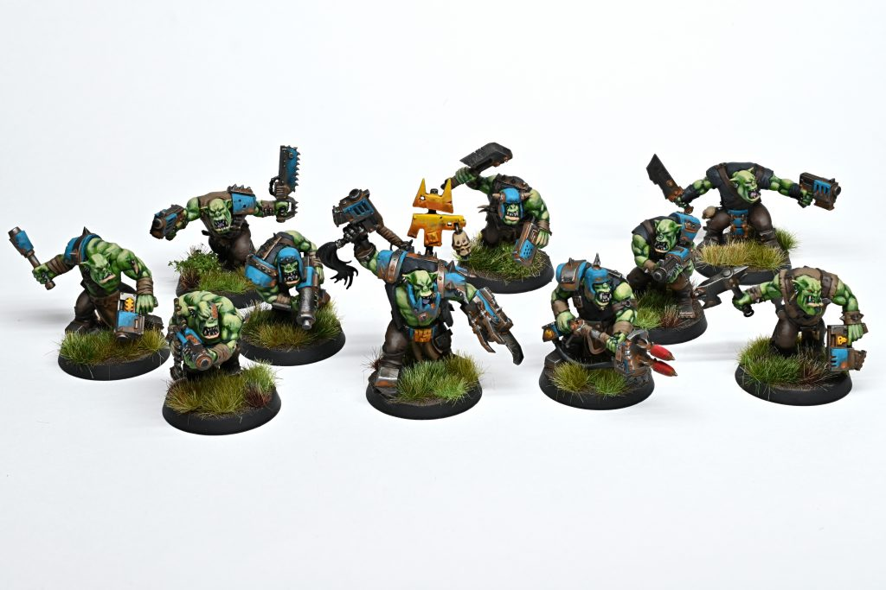
Boyz. Credit: RockfishWe saw the new Boyz datasheet previewed on Warhammer Community and well, what can we say about it? This is an absolutely monstrous unit. In terms of statline the only change is the bump in wounds for the Nob, but then there’s buffs to pretty much everything else here. They no longer make objectives secured natively (though you can get that ability back in Taktikal Brigade), but instead they get Tide of Muscle giving them LETHAL HITS on the charge, and Never Too Busy to Fight which means they can start actions while engaged.
In case you missed it, all Boyz now have shoota/choppa/slugga by default, not having to give up their gun to be able to hit things, and you now get 1 Nob per 10 Boyz as well. There’s also three special weapons in the unit (a big shoota, a burna, and a rokkit launcha) and you can take all three, and two of each in a 20-model squad. Nobz also get true kombi-weapons back, being able to choose from either a kombi-rokkit or kombi-skorcha, or a kustom shoota you will probably never see. It’s a similar story in melee - choppas get a boost to native S5 to compensate for Waaagh! no longer boosting your Strength, while power klaws go to S10 and also finally hit on 3s instead of 4s. The big choppa gains CLEAVE 2, and the kustom choppa is present.
This datasheet is, frankly, nuts. They have great melee, respectable shooting (especially now that being riled up gives you ASSAULT, so they’ll actually get to shoot the guns), they can do actions in combat (and, in Taktikal Brigade, basically any other scenario too). The Ammo Runt is the icing on the cake, giving you a once per game +1 to hit rolls for shooting - and if that sounds too restrictive, remember the Warboss also has that ability with a different name, so you can have a second bite of the squig if you want. As an Ork player I am excited by them, but I don’t think other people will be when I finish my 10-minute explanation of all their rules.
On the inverse, we have the Beast Snagga Boyz. These don’t get quite the same glow-up, although their Nob also goes to 3 wounds and you can run 1 per 10 in these as well (more fool me, who just built 10 without a Nob). They lose their Feel No Pain but get a 6+ invulnerable save instead, which is arguably better. Their datasheet rule is now Mobbed, which forces any MONSTER or VEHICLE that they charge to make a battle-shock roll at -1, or -2 if your Beast Snaggas unit has 13+ models in it. It’s not quite the same as re-rolling hits, but the penalty at least makes the check somewhat more plausible to fail.
Weapons-wise, their sluggas are the same as Boyz ones, and the thump gun gets a welcome boost by becoming a flat 3 attacks and swapping out BLAST to get ANTI-MONSTER/VEHICLE 4+ instead. You also get to keep your choppa, so you’re pretty much always going to run these now (and guess what this idiot also didn’t build recently - time to rip some arms off and start again). In melee, the power snappa loses an attack but gets ANTI-MONSTER/VEHICLE 4+ and a bump in Strength and AP, which is very welcome. Meanwhile the standard choppas are unchanged - which is a slight loss overall, since they used to bump to S6 in the Waaagh! and won’t any more - but also gain a Hunter profile against MONSTER/VEHICLE, pushing them to S6 and AP-2. That’s a huge boost against anything T10 or T11, and the AP is always welcome, so they may be a bit better at their intended goal of duffing up big things now. With the huge boosts to Boyz, Beast Snaggas also now come in cheaper than their regular brethren, a squad of 10 being one of the few things in this book that drops in price to 85pts.
Choppy
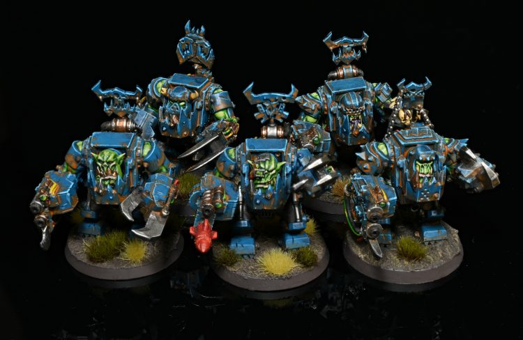
Meganobz. Credit: RockfishMeganobz get some welcome upgrades. Their old datasheet rule is replaced by two new ones, with Arrogant Invulnerability giving attacks that target them -1 AP, while Krumpin’ Time now means they get +1 to hit rolls in the Fight phase if the unit is riled up. Their weapons have also changed significantly, especially at range. The kustom shoota now has two fire modes, either Aimed - which has 18” range and a bunch of shoota shots - or Point Blank, which only has 6” range but makes them TORRENT and D3+3 attacks (and also has CLOSE-QUARTERS, so you can dakka things in melee). Alternatively they can take a kombi-weapon, which is a single gun with 3 different profiles representing the different options in the kit - either a shoota, a kill shot (rokkit), or point blank (a burna). Importantly the point blank profile on the kombi-weapon is not CLOSE QUARTERS, which is worth thinking about. On the melee side, the power klaw gets the same glow-up as elsewhere, meaning you might ever hit with one, while the killsaw stays at WS4+ but gets a welcome bump to 3 attacks. The twin version retains TWIN-LINKED, but both profiles go down to S10, so it feels like you may well want to look at some form of gun plus a klaw now. Killsaws (regular and twin-linked) also cost 5pts per model, so there’s a pretty solid argument for sticking to klaws.
Regular Nobz get a whole new datasheet, reflecting the new kit which is somewhat in limbo at time of writing. As mentioned earlier, they go up to 3 wounds by default, which is a good start. Their datasheet rule is now the slightly odd Get Out da Way! which means they can move through models (other than MONSTER/VEHICLE) while making a charge move - very handy if you need it, and of course their old rule is now a Stratagem in the Bully Boyz detachment, so still available if you want it. They also get an ammo runt, which has the same effect as it does for Boyz. Each Nob starts by default with a kustom shoota and kustom krumpa - the kustom shoota is the same as every other version, while the krumpa is basically a stand-in for the power klaw. It also seems to cover things like the power maul the one guy in the box art is holding.
You then have an array of options - any model can swap their kustom shoota for a kombi-rokkit, for a start. Then for every 5 models, you can swap their default weapons for a big skorcha, kustom big shoota, or a big choppa. The skorcha and big shoota come with a kustom choppa in the bargain so that their melee doesn’t disappear completely, but the big choppa doesn’t get a gun. You can also swap the kustom shoota on one guy for paired krumpas, which have the same statline as the regular krumpas but get full re-rolls to hit and wound (yes please).
It’s a lot of weapon options, and somewhat hard to figure out - the gun profiles are legitimately pretty good, but possibly not worth losing up to 4 models’ worth of melee output for. The paired krumpas seem like a no-brainer. Given you can attach a Warboss to these and rely on his newly-monstrous melee abilities, maybe putting up with a few kustom choppas and their still-respectable profile is worth a go.
Breaka Boyz get some reasonably significant changes to their melee weapons. Knucklebustas are no longer TWIN-LINKED and lose an attack, but gain a point of AP and damage. You probably still don’t bother. The smash hammers and tankhammer gain attacks, which is very welcome. Smash hammers now have a standard profile of S7 AP-2 D2, which is a bit worse than presently, but their Hunter profile against MONSTER and VEHICLE boosts to S12(!!) and preserves their damage 3. The tankhammer is S12 and damage 3 all the time, but hits on a 4+ now and is still HAZARDOUS. Both weapons lose their ANTI-VEHICLE/MONSTER, which matters a lot less on the smash hammers (which are now wounding most vehicles and monsters on 3s anyway), but does mean the tankhammer is less likely to trigger the dev wounds. Their Trophy Hunters rule changes from being a charge re-roll to being +1 to charge rolls, which is fine.Shooty
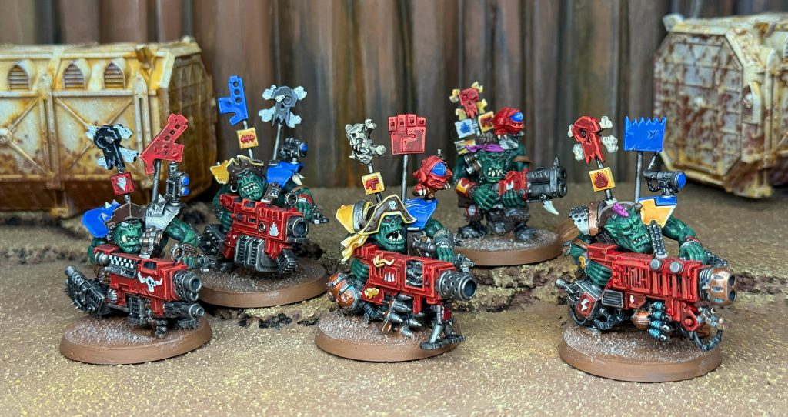
Flash Gitz. Credit: 40khamslam.Flash Gitz have been a perennial favourite of Ork players in recent editions, and if you own 30 of them from when that build was popular - congratulations, you’re going to want to get those out again. They don’t get ammo runts any more, so no more LETHAL HITS, but their snazzguns are now effectively kombi-weapons. You can pick from either a cutta, dakka, or kill shot profile - the dakka profile is basically the same one you had before, but with the modified LETHAL HITS rule for sluggas/shootas, while the cutta is a melta with S9, AP-3, and D3+2 damage, and the kill shot is a 2-shot profile with S8, AP-2, D2. The cutta and kill shot are both HAZARDOUS to boot, though these guys have 3 wounds now so that’s not as scary as it seems. Paired with this is their new Finderz Keeperz ability, which gives their ranged attacks +1 AP if either they are on an objective, or their target is. They also hit on 4s with every profile now, which is a huge glow-up for them. Once you start stacking on detachment benefits from Shoota Boyz, these get really silly.
Tankbustas also get some changes - most obviously in respect of their rokkit launchas. These don’t have a blast mode like the normal ones, but instead have the anti-tank profile by default, and a Hunter profile against MONSTER/VEHICLE which gives them an extra shot and S12. Instead of their old datasheet rule, they now get Rokkit Barrage, which forces a battle-shock roll at -1 against an enemy unit they hit in the shooting phase. It’s not quite +1 to hit/wound, but they’re also BS4+ natively and higher Strength, so that trades off a bit. The pulsa rokkit also gives them LETHAL HITS and +1 AP instead of the old buff to Strength, and you have to pick an enemy MONSTER/VEHICLE within 24” to apply it to (which also means split firing is less effective). The smash hammer you can give the Nob gets the same changes as in Breaka Boyz.Utility
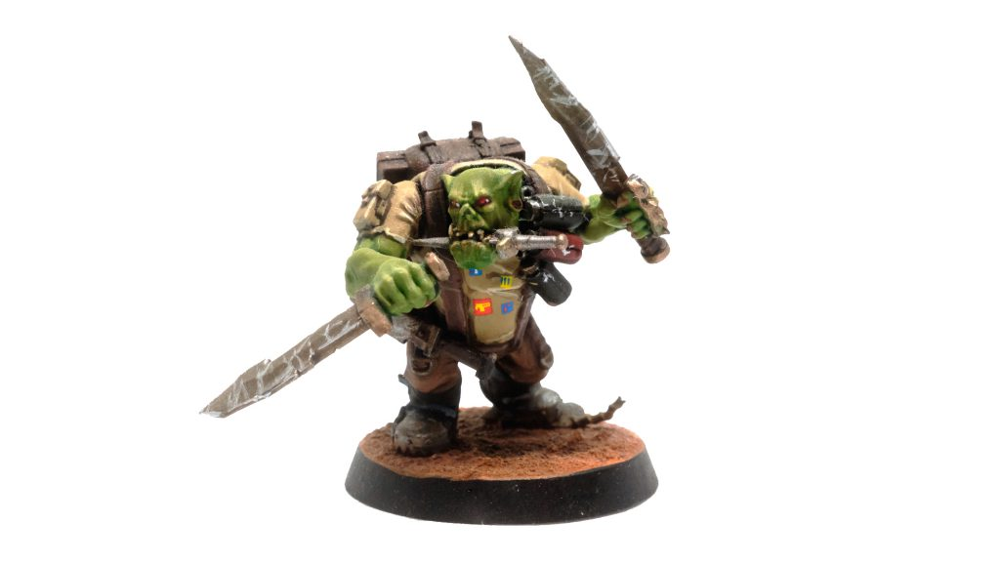
Credit: KeewaGretchin get more changes than you might expect. As mentioned above, the Runtherd is no longer part of the unit by default, instead being a Support character. Grots get a real armour save now since the gimmick of a 7+ that you improved with cover no longer works, but they also go down to OC1, which is a rough trade. They also no longer generate Command Points (your Warboss is going to keep on top of that now), with Thievin’ Scavengers now allowing them to secure objectives at the end of your Movement phase. So you’ll still be running a unit or two in every list, then. Amusingly they also get the Downtrodden rule, which means that every 2 Gretchin only counts as 1 model (rounding up) if you put them in a transport - an immediately obvious move here is to put a unit of 10 in a Trukk with something like Tankbustas or Breaka Boyz, who will leave you the spare transport capacity, and then pop them out to go and secure objectives in midfield. They also remain dirt cheap at 45/80pts.
Kommandos are still a brick of 10, and retain the dataslate rule from 10th edition which let you split them in half. The Bomb Squig is functionally unchanged, but the Kommando Grot now gives the Found ‘Em ability, which lets you pick one enemy unit in your Movement phase which is within 12” and give it +3” detection range until the end of the turn. This is not once per game, so you can keep doing it. This combos nicely with the Kommandos’ Nowhere to Hide datasheet rule, which gives them +1 to hit with attacks which target a hidden unit in both shooting and melee.Speaking of, Kommandos are beneficiaries of all the generic changes to weapons - improved rokkits, sluggas, choppas, power klaws etc. but the breacha ram, for some reason, goes down to S8 from S9. In line with the rest of the codex, you no longer give up anything to take your special weapons (except that the breacha ram replaces a choppa), so these guys will have better offensive output to go with their usual “stand on objectives and die early” role.
Stormboyz are in the slightly odd position of being left with an old kit which doesn’t include one of their weapon options - you can still give the Nob a power klaw, even though there’s not one in the box. Exactly where you’re meant to source this from now is a bit of a mystery - I’ve built one using an arm from the Meganobz which just about works, but it’s not the obvious choice. Alternatively his kustom choppa now has the statline it does elsewhere, so you’re not totally bereft if you run that instead. These guys no longer advance/fall back and charge natively, but instead get Rokkit Charge, which means that if you made a charge move you can give them +1A and S, but also HAZARDOUS. A perennial problem for Stormboyz is that they just don’t hit that hard, so being able to give them a more respectable number of attacks and S6 (or S11, on the power klaw!) should help a lot with that.Mounted
Speed Freeks
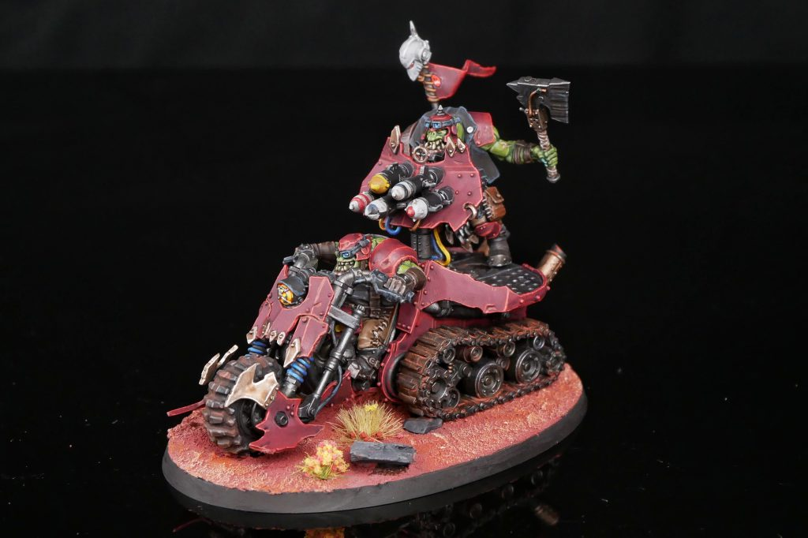
Evil Suns Wartrakk by Craig "MasterSlowPoke" SniffenWarbikers get a revamped datasheet to go with their new kit. Their statline remains the same, but their datasheet rule and weapon loadouts are completely different. Instead of the AP boost for shooting, they now get High-speed Carnage, which gives them +1 Strength and +1 Damage in melee on a turn where they make a charge move, giving them substantially more hitting power when combined with the choppa profile going up to S5 base. Do note though that the Nob no longer has access to a power klaw; instead he has a kustom choppa, with an extra attack and point of AP as well as base damage 2. He’s not going to threaten vehicles any more, but with damage 3 on the charge he’s respectable into medium infantry. Meanwhile the dakkaguns lose twin-linked and rapid fire, but go up to 6 shots each baseline and gain the shoota LETHAL HITS rule mentioned above, while the Nob gets a dual kombi-rokkit giving him either this fire mode or 2 shots with a rokkit launcha statline, and ASSAULT into the bargain. The power klaw is a little bit of a loss here, but these look great if they stay cheap.
Backing them up are the new Wartrakks from the Armageddon box. Again no change in statline for these, but their kustom shoota goes up to 4 shots instead of 2 and keeps RAPID FIRE 2 plus getting the lethals. The rokkit launcha is renamed a multi-busta launcha like for the Big Mek Dakkarig but is otherwise unchanged. The Nob riding on the back has apparently remembered his good choppa this time, as the melee profile loses an attack but goes up to S5, AP-2, D2, making these at least respectable at booting a couple of Scouts.
The datasheet rules change completely. Whatever was going on with them being SUPPORT in the original cards has been replaced with Speednob Support, making them Lone Operatives as long as they’re within 3” of a friendly SPEED FREEKS unit (but NOT another Wartrakk - you can’t run 3 units of them around hiding each other!). In addition they get Bust ‘Em, which lets you pick a unit you hit in the Shooting phase to make busted until the end of the turn. Your SPEED FREEKS units get LETHAL HITS (the proper rule, no rider about monster/vehicle on this one) against a busted unit until the end of the turn, so it works for melee too. One important note here is that Trukks now have SPEED FREEKS by default, so not only does this work for all the stuff you’d expect, it also means anything shooting out a Trukk with Firing Deck will benefit as well. The unit is also now 1-2 in size, so you can run up to 6 Wartrakks in an army.
Rounding out our options here are Deffkoptas, which are now MOUNTED instead of VEHICLE. Statline again unchanged, but lots of other alterations to them. Deff From Above now gives them +1 to hit rolls if they made an ingress move this turn, and they also gain Aerial Manoover which lets you put them back into strategic reserves if they’re unengaged at the end of the opponent’s Fight phase. This alone is incredible utility, turning them into a fantastic unit for mission play given they also have Deep Strike, but their offensive output is respectable too. The rokkits now have two profiles, either a blasta profile which gives them 2 pretty weak shots (S4 AP0 D1) but BLAST 2, or a busta profile which has the standard rokkit launcha 2 attacks at S10 AP-2 D3 profile plus true LETHAL HITS, though they lose TWIN-LINKED. The kustom mega-blasta gives up a point of strength to gain an extra shot and keeps HAZARDOUS and LETHAL HITS from its previous incarnation. They also get two different melee profiles, either choppas (with WS4+ for some reason, presumably because it’s hard to hit things when you’re also flying a helicopter), or Spinnin’ Blades, which have more attacks and better WS than the choppa along with CLEAVE 1, but are also HAZARDOUS (if you thought hitting things with a choppa was hard, you try hitting something with the actual blades on the helicopter).
Squighogs
Squighog Boyz get one of the random small nerfs in this book which runs counter to the rest of it being stonking great buffs, going down from T7 to T6. They also lose their Feel No Pain, though they do trade it for a 6+ invulnerable save instead. You also no longer double up on Bomb Squigs if you have a big unit.Not too much else here to lament, however. They lose their Wild Ride datasheet rule and replace it with Brutal Impact, giving them +1 damage in melee if they made a charge move this turn - a really nice boost to their output. The only changes to their shooting are stikkas losing 3” of range and sluggas getting the lethal hits rule, while on the melee side the output of the regular models goes down a bit (the stikkas lose LANCE, though retain their ANTI-MONSTER/VEHICLE 4+), but the Nob improves with the big choppa going up to S7 and also getting CLEAVE 2. Two of those into most anything will do some work, and of course if you’re running them in Da Big Hunt they’ll gain AP into MONSTER and VEHICLE units too. They also get MOBILE, helping you get their massive bases around the table. Their price stays roughly the same though, and it may be that the durability drop is enough to take them out of consideration, especially as there’s so much more lethality in the rest of the book.
Monsters and Vehicles
Light Vehicles
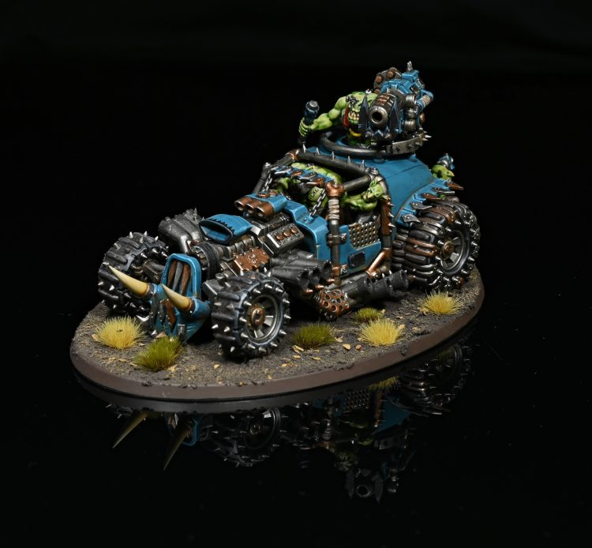
Kustom Boosta-blasta. Credit: RockfishMek Gunz continue to be one of the more out-there datasheets in the codex, retaining all four of their different guns as options with quite a lot of remixing of profiles to go with it. The bubblechukka has mercifully been compressed into a single profile, which is one of the game’s more unusual ones - it has 8 attacks with BLAST 3 and LETHAL HITS and a mighty AP-3, but is only S3 and 1 damage. The kustom mega-kannon is much the same as before but with a slightly de-varianced profile, now boasting D3+1 attacks instead of D6, but at AP-2 and flat damage 4. The smasha gun also removes some variance by going to a straightforward 4 attacks, but drops a couple of points of Strength, while the traktor kannon gets a massive strength drop and loses DEVASTATING WOUNDS, but gains an extra shot and D3+3 damage. Their Madcap Artillery rule also gives the unit an effect if all the ranged weapons are the same; if they are, then you can pick an enemy unit that they hit, and get a different effect depending on the type of gun you have - bubblechukkas strip cover, mega-kannons reduce Ld, smasha guns reduce M, while traktor kannons prevent units from using take to the skies. Of course, if you only have one gun in a unit, you’ll automatically qualify for this, and they’re quite cheap, so having a smattering of different Mek Gunz in separate units is one way to take advantage of this. The Madcap Meks detachment does give them a pretty powerful Stratagem to use though, and they can be joined by Meks and the various kinds of Big Mek, so you could also treat these as a real shooting platform - especially since that also means they gain the INFANTRY keyword and can take advantage of the rules in Shoota Boyz too.
Rukkatrukk Squigbuggies survive the creation of the Warbuggies datasheet (for which see more below) and remain an independent unit. You’ll notice one important change with these immediately - the Squig Launchas no longer have INDIRECT FIRE, so you’ll need to expose the buggy to get any use out of it. They also lost BLAST, but do retain IGNORES COVER, and go to BS4+ as well so you are at least reasonably likely to do something with them when they do get to shoot. The datasheet rule is Squig Barrage, which gives an enemy unit (not a MONSTER or VEHICLE) that you hit with your squig launchpad -1 to hit until the start of your next turn. You can also take these in units of 1-2 now, and they get the EXPLOSIVES keyword, which is neat.Warbuggies compresses all of the other, non-Rukkatrukk versions into a single datasheet. The profile is exactly the same as the Rukkatrukk, and you can again take 1-2 of them. On baseline it comes equipped with Extra Dakka (a generic profile for the various sidearms these models have), a Mek Speshul (basically the Boomdakka Snazzwagon’s old gun), and a Spiked Ram (the same melee profile they used to have, again with CLEAVE 1 now). You can swap the Mek Speshul for a Rivet Kannon, which is what the Kustom Boosta-Blasta used to have. Both guns have an Aimed and Point Blank profile, with the same Strength/AP/Damage but random shot numbers, 6” range and TORRENT for the Point Blank versions. You probably plump for the Rivet Kannon most of the time with its S7 AP-2 D2 and DEVASTATING WOUNDS against infantry units, but the Mek Speshul does have a hilarious number of shots and SUSTAINED HITS 1, so if you’re in the market for something that can just pick up handfuls of Termagants or something then this might be worthwhile. Like the Rukkatrukk, these also get EXPLOSIVES. The most interesting thing about these is the datasheet rule, Drive-by Skorchin’, which lets you pick a visible enemy unit within 6” (not a VEHICLE or MONSTER) in your Movement phase and prevent it from using Fire Overwatch. Whether you can actually get this in position often enough to matter is an open question, but the possibility is there, and taking one of these to shut down big flamer units seems cool.
Trukks remain your premier transport option for getting the ladz up the field and into someone’s face. The new datasheet hasn’t blessed them with any changes to Toughness or Wounds, but they gain some substantial offensive output - the dual big shoota doubles its shot count compared to the old one (as the word “dual” would suggest!) while the rokkit launcha has both the busta and blasta profiles so that you get some incidental anti-tank shooting that can also flex into putting infantry under pressure. In melee, the spiked ram is the current Trukk’s melee profile with the addition of CLEAVE 1, while the buzzsaw and grabbin’ klaw are extra attacks weapons so you get a bit more punch in combat - the klaw looks favourable to us with 2 attacks at S10 AP-2 D2, while the buzzsaw is only S6 AP-1 D2 but with the addition of CLEAVE 1. The old Grot Riggers rule is gone and replaced by Pilin’ Out, which lets units embarked in the Trukk make a reactive disembark move. This is potentially useful for letting something like a unit of Flash Gitz fire Overwatch later on, or preventing your transport being wrapped, but take care as you can’t use Heroic Intervention - the rapid disembarkation mode stops you from declaring a charge until the end of the turn. They also remain dirt cheap at 60pts, which is helpful.One other interesting note is that they gain SPEED FREEKS as a keyword, which means they benefit from anything that affects that - Deffkilla Wartrikes can rile them up, they benefit from Wartrakks making things busted, and they can use the various rules in the Kult of Speed detachment. That means that they can use Dakkstorm to buff Firing Deck shooting, for example, potentially getting you a LETHAL HITS/SUSTAINED HITS 1 package. They’re also just big models, and therefore a potentially useful platform for the Smoky Gubbinz upgrade to give things behind them cover.
Wagons
 Gunwagon. Credit: Rockfish
Gunwagon. Credit: Rockfish
After briefly being moved back to a single datasheet in 10th edition, Battlewagons are once again split up. The Battlewagon itself is now a much more focused on being a transport, while the Gunwagon is more of a big tank. This version is only T11, and while it gets its big shootas it no longer has any of the other guns - but does retain the melee weapons, which all hit on 3s now, and gain CLEAVE 2 for the Crushin’ Bulk (representing either the ram or deffrolla) and Wreckin’ Ball. With transport capacity 22, this is your premier option for moving LOTS of the ladz around all in one go - and its Mobile Fortress rule now makes ranged attacks against it -1D, so it’s more likely to get there. Like all the vehicles in this section, it has the WAGON keyword, primarily for interacting with the Blitz Brigade detachment.
You should think of Gunwagons essentially as having the old ‘ard Case upgrade, bumping them to T12 and dropping their transport capacity to 12. This is clearly much more intended as a damage-dealing unit - its datasheet rule is Mobile Arsenal, giving it re-rolls of 1s to hit with ranged attacks in the Shooting phase. It also gets all the guns, which have had some pretty chunky buffs. For one thing, apart from the big shootas, they all hit on 4s. All of these are massively upgraded - the humble kannon now has BLAST 3 and RAPID FIRE 4 on its blast profile, which has a baseline 4 attacks, while the shell gets RAPID FIRE 2 and 2 attacks, plus D6+1 damage. The killkannon is now ANTI-INFANTRY 3+, BLAST 1, and RAPID FIRE 4, with a baseline of 4 attacks, and while it loses a few points of Strength (going from 9 to 6), it also goes up to AP-3.
Finally there’s the zzap gun. This was a bit whatever in the old book, because flat damage 5 isn’t so helpful when you only have 1 shot that misses 66% of the time. This new version has a whole stack of rules - ANTI-MONSTER/VEHICLE 4+, DEVASTATING WOUNDS against MONSTER and VEHICLE, RAPID FIRE 2, and SUSTAINED HITS 2. It gets 2 shots on baseline at S8 AP-2 D4, and like the other guns it’s BS4+ now. This is the ultimate in casino cannons - on baseline shooting it at a monster or vehicle, you coinflip on hit rolls and coinflip on wound rolls, meaning you average 2 damage. If you’re in rapid fire range though you’re making four attacks, which can generate anything up to 12 hits, and suddenly you’re cooking with gas. There are going to be games where this thing shoots a couple of times at long range, misses, and does nothing, and there are going to be games where it kills God.
Hunta Rigs, and their Kill Rig brethren, get two huge datasheet changes at once. Firstly, they gain a 6+ invulnerable save, meaning there’s always a chance you spike a save even against melta. Secondly, their Feel No Pain goes from 6+ to 5+. This is a huge jump in resilience - and a slightly odd one when the move on other Beast Snagga units has been to gain an invulnerable save instead of the Feel No Pain. As previously, both Rigs have the ‘eavy lobba and stikka kannon, of which the only changes are that the lobba now has 3 attacks baseline and BLAST 2, while stikka kannon loses its very niche SNAGGED rule. In melee, the only profile differences are that the Saw Blades get CLEAVE 1, and are now EXTRA ATTACKS instead of the Butcha Boyz. This thing now has two datasheet rules; the first one, Fully Loaded Butchery, is similar in spirit to the previous version, but now you get +2 attacks for each model embarked within up to a cap of +22(!), meaning that even a single squad of Snaggas and their Beastboss make this thing into a horde-clearing machine - and despite only being AP-1 D1, 26 attacks with ANTI-MONSTER/VEHICLE 4+ will let you put plenty of hurt on those too. It also has Tramplasquig Charge, which lets you use the Crushing Impact Stratagem for -1CP. Its transport capacity also jumps to 22 from 21, letting you put two units of Beast Snagga Boyz with attached characters in here, or one unit of 20 with a Leader and Support.The Kill Rig doesn’t get anything quite so wacky as Fully Loaded Butchery, but it gets two significant changes of its own. Firstly, its Wurrtower is now flat damage 6 instead of D6, though it’s also only one attack now instead of D3. Secondly, its Wurrboy is a level 1 psyker, with two different psychic abilities. Beastscent is used in the Movement phase and gives a unit disembarking from this model +1 to wound against MONSTER and VEHICLE units (which is super powerful combined with the Snagga hunter profile), while Warpath gives this model LETHAL HITS and PSYCHIC for its melee attacks. Like the Hunta Rig, its transport capacity jumps to 12 to accommodate Support characters.
Regular Walkers
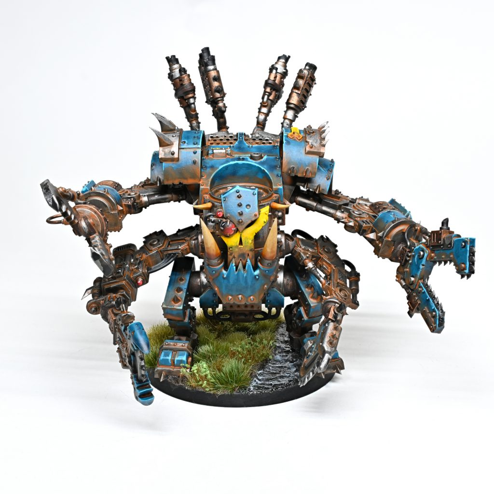
Deff Dread. Credit: RockfishKilla Kans are another beneficiary of this book’s approach to dealing with difficult mixed weapon profiles by just turning them all into a single multiple-choice kombi-weapon. In this instance, that means that each Kan comes with a Kan Blasta, which has either a dakka, kill shot, or point blank mode - basically reflecting the grotzooka, rokkit launcha, and skorcha that they used to have. They also keep their kan klaws, with the same profile as before. Their datasheet rule is now the streamlined Spiteful Power Trip, which gives their attacks +1 to hit rolls if the target has no models in it with Toughness 7 or higher. Note that this is not about the unit’s functional Toughness characteristic - if any model has T7+, the rule doesn’t work. That links to their own new Toughness characteristic of 7, a small but meaningful bump. They also move 8” now. These are pretty neat, with their new shooting flexibility being a big highlight. They also get a lot out of the new Dread Mob rule meaning that they can double up on buffs and the whole unit only has to make one hazard roll.
Deff Dreads also get a revamped datasheet rule - Dread ‘Ard is a straightforward -1 damage, which is a great buff to have. Their guns remain separated, so if you want to run them with shooting then you’ll need to decide what weapons you’re taking. One really interesting thing with their melee now is that you start with a single Dread Klaws weapon which gives you 5 attacks with CLEAVE 1. You can then equip up to two Extra Klaws, which don’t have the CLEAVE but are EXTRA ATTACKS. The neat thing about this is that if you roll the 1-2 for Dread Mob, each weapon gets +1 attack - so on the Deff Dread that means another three swings. If you’re suddenly putting out 10 attacks plus whatever CLEAVE 1 gives you, a Deff Dread can become a seriously scary prospect.Titanic Walkers
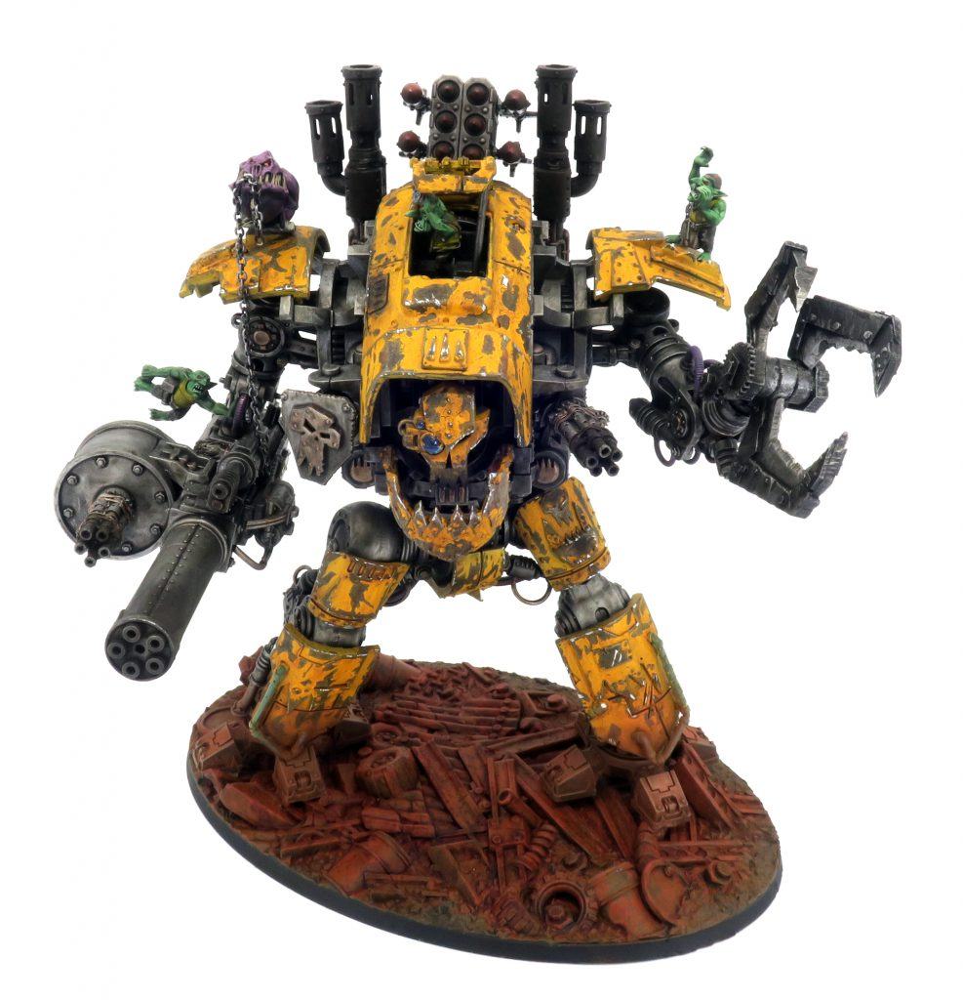
Gretchin Bad Moons Looted Imperial Knight (Gorkanaut)Leading the charge for the really big stuff we have the Gorkanaut. This unit has, in my (Wings, that’s right, I’ve taken over from Corrode to talk about robots) opinion been consistently somewhat undervalued in its current form, I’ve played against them a few times and they always outperform their reputation. This time around, they’re properly terrifying - they go up in price a fair bit (to 325pts), but gain several powerful new tricks. That starts on the datasheet, with them gaining an inch of movement, and a 2+ base save, both nothing to sniff at, and the mobility theme continues with the Gut Hatch ability, which lets units inside make an assault disembark after the Gorkanaut moves. You want it getting close and personal, and now whatever you’ve crammed inside can do that too! Lethality also increases - rather than melee +1 to hit in Waaagh, it now re-rolls 1s to hit in melee all the time, and like most other units that used to have a Sweep profile, it gains cleave on its big claw (and one extra base attack), with a very impressive 3 as the value. For those counting, that means if you slam it into a 20-model unit, it actually has more attacks than the old sweep profile, and all a S18 -3 D6. It is also a Super Heavy Walker, so can navigate terrain easily, and its mega shoota gets a torrent profile when you want some reliable chip damage.
The Morkanaut, sadly, is a little less exciting - it gets the same profile boosts, and Gut Hatch, which is useful for making it an all-rounder, but its guns are merely OK, it also goes up in points significantly, and you can do much better for shooting output in this book. Its melee is also still only 5A and only cleave 2, so not as riotously deadly as the Gorkanaut. Frankly, this unit is a bit of a victim of history - it’s been consistently thought of as better than the Gorkanaut since 8th Edition, and it’s suddenly now worse, but still priced higher. Stick to Gork. Sorry Mork.
Finally, in this section, the Stompa. Good lord. You’ve probably all seen this in the WarCom preview, and this is indisputably one of the wildest centrepiece datasheets that’s ever been created, an apocalyptic multi-phase engine of utter destruction that will dominate any game its in until put down, which is no mean feat thanks to its super strong defences. The question on everyone’s lips, we assume, is how much it costs, and the answer is 700pts, which is definitely a lot, but within the range that this is plausibly still very good. There’s clearly a note of caution here, because your second one costs +100pts, meaning double Stompa is probably not the way to go, but it’s so lethal that it would absolutely still win some games. The brief here was clearly to produce a datasheet that was worth 700pts, and there’s a real chance that the Stompa succeeds at that.
Fortifications
Apparently we are still making Fortification rules, and we’ve even recognised some of the major structural problems with them. Pleasantly surprising! The Big ‘ed Bossbunka lets you build your very own Orky treehouse, and you’re encouraged to do it on your home objective. The bunka has a base OC of 0, but you now add the OC of all embarked models (up to 11) to its own, letting you hold a position in style. It is absolutely not worth the 135pts it costs you to do that, but it’s (unironically) very good to see some thought put into how to make this at least functional rather than a net disadvantage to have on the table.
Aircraft
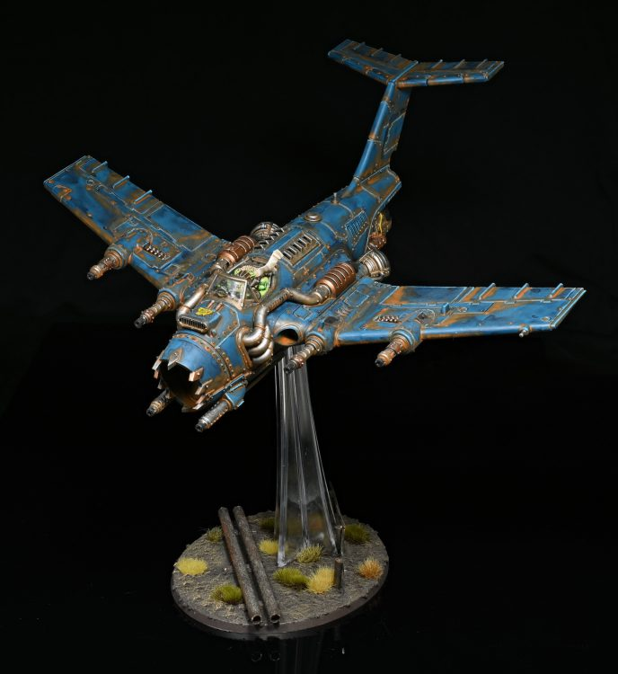
Dakkajet. Credit: RockfishOrk planes are a land of contrasts here.
We start with the Blitza-bommer, which is bad. It sports some mediocre shooting, and if you bring it down and it survives until your opponents Fight Phase, you can hurl a bomb at a visible enemy within 24”, dealing d3MW on a 1, 3 on a 2-5, or d3+3 on a 6. That is not enough payoff for the ask to come down and survive.
It’s also just less useful than the Burna-bommer, which has a similar deal, but the upside that while its Burna bomb only deals d3MW to a non-Monster/Vehicle on a 2+, if it succeeds the target also cannot be Hidden in your next turn, and you also get Ignore Cover against it. If you’re running a shooty list, that’s quite a bit more payoff, making this slightly more interesting, especially as its shooting is also augmented with a skorcha missile rack. The ask of surviving your opponent’s whole turn for your payoff is still pretty steep, but it feels like you’re more likely to want this one.
Moving over to pure shooty planes, the Dakkajet sits in its standard role of being very cheap and having a lot of shots, putting down 36 shots in rapid fire range, with +1 to hit against non-FLY units, and LETHAL HITS against non-Monsters/Vehicles. There are probably metagames where you’re interested in this at 125pts, but the current one is not it - this still doesn’t do anywhere close to enough against elite forces.
For that you want a Wazbom Blastajet, to which my reaction is mostly “oh noooooo”. It’s much pricier than the other planes at 175pts (195 for your third), but you get your money’s worth. Hoo boy. First up, all the guns here are BS4+ with IGNORES COVER - instantly making it more reliable than the rest of the planes - and what guns they are. Your Wazbom is always sporting a dual supa shoota for some S6 AP-1 dakka, plus a smasha gun that’s 4A, S6 AP-3 D3. To that, you can add either a dual wazbom mega-kannon (*shakes head*) or a dual tellyport mega-blasta (*nods vigorously*). The mega-kannon is a fine gun, four shots at S12 AP-2 D4, but the mega-blasta is one of the most out-there gun profiles we’ve seen in a hot minute. It is relatively short ranged (24”, but you want to be in 12” for Rapid Fire), but it fires 6 shots (RF6 also) with Blast at S9 AP-2 D3. Combining that with the smasha means one of these can rock in and drop (at least) 16 D3 shots at BS4+ ignore cover, which is extremely good in an elite metagame, and if you were worried about killing bigger stuff then don’t - the Blastajet also gets +1 to W against Monsters and Vehicles in your Shooting phase. Two of these for 350pts legitimately kind of solves your shooting needs (even more so if you take the Flyboyz detachment), and I expect some planes that have sat idle since the glory days of 9th Edition to swoop into battle post-haste.
How Will They Play?
With the variety of detachments on offer here, however they want to. If you’re an Ork player, this book feels really exciting - you have a lot of options to mix and match your army to suit how you like to play it. Sometimes that will mean going deep on one particular plan, like stacking detachments to power up your infantry shooting, but alternatively you might end up with pretty discrete chunks of your army aiming to do different things, with their own focused detachments to support them in doing it.
Potentially the biggest change here is the new way that riled up works, and the number of ways available to either be permanently riled up or to get back into there even outside of your Waaagh turn. A huge issue for previous incarnations of Orks has been the Waaagh army rule creating a very binary state - either your units are amazing, or they’re mediocre, something best embodied by the old Warboss datasheet with its paltry 4 attacks out of Waaagh. Far more of your units will be able to benefit from both the speed that being riled up offers and also its defensive boosts, keeping them on the table for longer.
The shake-up of which characters can lead (or support) which units will help out, too. To pick an obvious example, Flash GItz were previously bereft of leaders, with only the slightly odd addition of the Bannernob from the Armageddon box giving them any way to have an attached character. Now you have your pick of Meks big and small, who bring buffs of their own and potentially powerful enhancements as well.
What will be really interesting to see with this book is where the shooting lands. There are loads of datasheets which have been bumped up to BS4+, and some easy ways to get IGNORES COVER or +1 to hit (or both) so that your Orks start to shoot much more reliably than they ever did before. This has usually spelled disaster (we all remember the first go around with More Dakka), but that tended to be because Orks were balanced around having huge amounts of variance in their shooting profiles, and rules that bumped that towards the higher end of their potential output caused immediate issues. It’s much easier to balance those units with points if you have a better idea of what their expected output is meant to be. Whether it will actually be balanced is a different question.
Conclusions
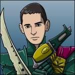
Liam: As someone who’s built up a substantial Ork horde over the last 18 months or so, this is the perfect book at the perfect time. It’s full of exciting stuff, completely reinvigorating my interest in the faction (which is good, because even with Orks dominating my painting time for the last year and a half, I still have loads to go). As a player of the faction, it’s great that all my stuff looks incredibly cool, that all the units feel fresh and new, and that I have a ton of ideas of how I want to play my army.As someone who also plays quite a lot of other armies though, you look at this book and it seems night and day compared with everything else that’s in the game currently. Even putting aside having things like psychic abilities which simply don’t exist in other factions right now, this thing is absolutely stuffed to the gills with rules. In suitably Orky fashion, it feels like all the knobs have been turned to 11 at once.
Some of that is a natural consequence of trying to address how binary the Waaagh! could be, with lots of datasheets picking up an extra point of baseline Strength on their melee weapons so that they perform better in the other four turns of the game and aren’t so reliant on your one big turn to achieve anything at all. There’s also sensible bits of sanitisation - moving to CLEAVE instead of sweep profiles, turning kombi-weapons into a generic profile with a range of options rather than either fully splitting them up or persisting with the slightly anaemic 10th edition implementation - which may have some unintended consequences for how much of a bump they give certain datasheets.
In the short term, the concerns about this book will be about how it lands in terms of power. We’re pretty convinced it’ll be right at the top end. Looking across the 11th edition codex cycle to come, the real challenge will be how Games Workshop manage the difficult act of keeping on top of balance as new books come out - it’s a very different question balancing one book like this against a field of books with older design sensibilities than it is balancing 10 books like this against the other 18, and again when you’re down to a handful of old books competing against mostly new ones.
In the meantime, it’s good to be green.
Wings: Unlike Liam, I am not an Ork appreciator, but what I do appreciate is people having fun with their toys, and it’s undeniable that this book offers that. It’s definitely good that whatever collection of Ork models someone has picked up can be hammered together into a functioning force, and whichever detachments you pick will do a good job of amplifying their favoured units. I think the quality of the detachments really stands out - I really don’t like the removal of any 2DP options as a choice of direction, but I’m very impressed by the sustained level of quality that the fourteen 1DP options in here manage. There really aren’t any outright duds, and if some get left by the wayside it’s going to be more down to which datasheets stand out rather than the detachments themselves. Also - Psychic Levels being back kicks ass, and I think this is an area where rolling back some of the simplification from 10th was the right choice, with the new implementation striking a really good balance between old and new (and adding extra powers is a great use of the detachment system). It does, however, mean that I need an Aeldari Codex on my desk tomorrow. Please. Pretty please?Unfortunately this is not the only place where 10th’s simplifications have been walked back a bit, and on the datasheets I’m much less of a fan. This is not because they are bad datasheets - quite the opposite, essentially everything here is minimum good, but quite a few units cross the line into being extremely good. Many of them also have too many different things going on, which both makes it hard to get a handle on what they can actually do, and is also likely to make any balance changes needed quite difficult to land, especially as there’s always going to be a big bench of units right behind whatever you’re nerfing.
Where I think the book does best is on the rebalancing of the various elite melee Infantry pieces - these all now feel properly good at what they do, rather than just being Waaagh turn one-tricks, but they got decent price hikes to account for this, making them premium units that feel worth the price. I worry they’re going to be sidelined by some of the extremely pushed Vehicles, Flash Gitz, basic Boyz and Grots, with the monstrous Ghaz datasheet present in almost every build.
The other listbuilding angle I’m a little concerned about is how easy it is to permanently Rile Up a significant portion of your army. Having the regular, Snagga and Speed Freek versions of this effect not overlap for being once-per-turn, plus Ghaz, plus a few perma-Rile effects like Zodgrod is a lot, and is both very strong, and cheapens the impact of needing to make decisions around when to Waaagh.
There’s also, bluntly, a few things where what should be obvious balance risks based on the experience of 9th and 10th have snuck through. The Rigs should probably not have simultaneously gained both improved Feel No Pains and an invulnerable save. The profiles on the Zzap Gun and the Tellyport Mega-Blasta should surely have raised a few eyebrows. Flash Gitz are kind of good at everything in a way that erases some other choices. The Stompa…I really hope that it was put on the table at least once during playtesting because dear Gork (or possibly Mork).
I also really dislike two specific choices. The first, returning to the extra Riled Up effects, is the fact that these also remove Battle-shock. 11th just made that more impactful, and made investing in things like Chaplains way more interesting. Giving you a way to remove it for free as a side-effect of something you always want in your army undermines that massively. The other is the random point-blank Torrent profiles on some guns. Orks miss sometimes - they’re famous for it! Armies shouldn’t just get to bypass their weaknesses or potential counters, and both these choices feel like they’re giving Orks too much of a cushion against any sort of fightback, which is again going to make balancing tough.
I’ll be honest that this book scares me a fair bit, which is a shame because I do like the detachments a lot, plus the effort to broaden the viability of units throughout the book. We’ve come into 11th with a pretty high power level from end-10th, and this Codex seems to indicate that 11th books are going to push that even higher. As we learnt in 9th Edition, that’s tremendously tricky to get right when everyone else is still using books from a lower-powered era. I will say - the general increase in points does indicate an awareness of the need to account for that, and they do impact what you can put on the table quite substantially. It is possible that the combination of that and the removal of some of the really tough bricks (mostly by nixing Feel No Pains) means this lands more sensibly than I’m expecting, or at least in a state where only the tall poppies need to be seriously slammed, but I think in the immediate term the really aggressive pricing on big stuff (especially pieces like Ghaz and Mozrog that can be escorted to battle as Lone Operatives) will push them over the top.
We will see. I can certainly say that Ork players are going to love this book, and have an absolute whale of a time with it, and I honestly hope that I’m wrong and that fun doesn’t come at the expense of everyone else.
Wrap Up
And with that, it’s all over bar da krumpin’. So, so much krumpin’. Make sure to check out our looks at all the Detachments as well, and to all Ork players out there - have a great time with this one.
Have any questions or feedback? Drop us a note in the comments below or email us at contact@tabletopbattles.com. Want articles like this linked in your inbox every Monday morning? Sign up for our newsletter. And don't forget that you can support us on Patreon for backer rewards like early video content, Administratum access, an ad-free experience on our website, and subscriber-only content covering competitive Warhammer 40K!Originally published on Goonhammer.


Leave a Comment